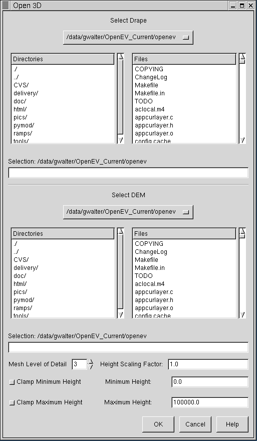

Open 3D
OpenEV is capable of displaying 3D views as well as 2D views. To setup a
3D view use the File->Open 3D option in the menu. This launches
the 3D layer loading dialog.

Selecting Drape, and DEM Rasters
Displaying a raster in 3D requires two components. One is the drape image.
The image to be displayed in 3D. The other component is the raster used as
a source of elevation information (the DEM raster). The Open 3D dialog
contains two embedded file selectors, one for selecting the drape image
and one for selecting the DEM raster. Any OpenEV supported raster format
can be used for the drape and the DEM. Supported raster formats are
discussed in the File Access help topic.
Once selected OpenEV will create a 3D mesh over which to drape the drape
image, based on elevation values from the DEM image. The density of the
mesh is determined by the DEM Level of Detail control described later, but
it is typically at substantially lower resolution than the drape image. Each
mesh location is sampled from the DEM raster. If the location lies outside
the DEM raster a value of zero is assumed.
It is not necessary for the drape and DEM images to have the same resolution
or the same exact region; however, areas of the drape image lying outside
the DEM will not have proper elevations assigned. Areas of the DEM outside
the drape image will not be used. The coordinate system of the drape and
DEM images should be compatible. OpenEV does not check this, so if the
coordinate systems are different it is likely that no overlap will occur, or
the elevations selected will be inappropriate.
Mesh Level Of Detail
The Mesh Level of Detail selector allows control over the density of
the elevation mesh. A highly refined mesh will result in more accurate
geometry, with one mesh point per drape pixel being the most refined the mesh
can be (at level 8). The least refined mesh (normally used for 2D display)
has only one mesh point at each corner of the 256x256 drape tiles, and is
mesh level of detail 0.
Highly refined meshes take alot more memory, and will generally slow down
redraws substantially. The default mesh density (level of detail 3) has
one mesh vertex every 32 pixels. Level of details in excess of 5 (one mesh
vertex every 8 pixels) can become painfully slow even on accelerated systems.
Height Scaling Factor
The height scaling factor is a multiplier applied to all elevations. A value
of one gives a physically realistic display if the elevations are in the
same units as the image georeferencing (ie. meters). It may be desirable to
exaggerate the elevations to make 3D effects more visible by setting a
scaling factor greater than one.
In some cases elevations are in different units, and the scaling factor can
be used to correct for this. For instance, if the georeferenced display is
in meters, but the elevations are in decimeters, a scaling factor of 0.1 will
correct things.
Height Clamping
The toggles for clamping minimum and maximum height can be used to
restrict the range of mesh heights, according to the values in their
corresponding text fields. This can be useful if the raster
used as a DEM has invalid points that OpenEV is treating as valid data.
This clamping is a one-time operation that acts on the data as it is
read in to set the mesh values; it does not affect scaling operations
that act on the view as a result of key-press events.
3D View Mode
Once the OK button is hit, a new raster layer will be created, with associated
3D mesh values. Depending on the level of detail selected for the mesh this
may take some time.
Once complete the view is placed into 3D Mode, and a different set of
controls are used to maneuver.
Mouse and keyboard controls for 3D mode are described on the
View Area Button/Key Sequences page.
Scrollbars, and the various vector editing controls should not be used in 3D
mode as they will behave inproperly.